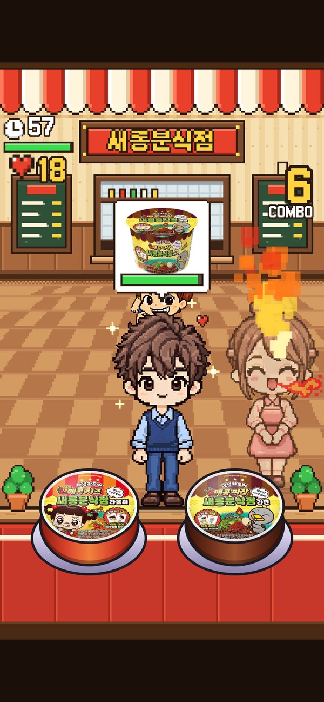

▶ 눌러서 플레이새롱분식점 판매의 달인 실 작업 6일 · 31개 버전
- 웹게임 서비스를 위한 데이터 조사와 신제품 컵라면 홍보를 겸한 모바일 미니게임 기획 및 제작
- AI 코딩 도구 Claude Code로 캐주얼한 조작감의 시스템과 콘텐츠를 HTML5로 구현, 30여 차례 버전 개선
- 생성형 AI 도구 Codex로 기존 캐릭터 IP를 도트 형태로 제작하고, Claude Code로 수정·보완해 AI 생성 그림 특유의 어색함 최소화
- 게임 규칙과 난이도를 반복 시험하며 조정하고 정확한 수치값을 기록
- HTML 한 파일로 묶어 회사 서버에 출시 및 유튜브 커뮤니티에 배포